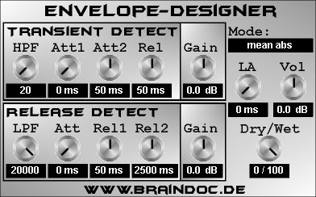

|  |
Was ist Envelope-Designer?:
Envelope-Designer ist ein VST-PlugIn für die PC-Plattform mit dem man das Verhältnis zwischen Transienten und gehaltenen bzw. abklingenden Phasen des Eingangssignals einstellen kann. Zur Detektion der transienten Anteile werden dabei zwei Envelope-Follower mit gleicher Release-Zeit jedoch verschiedenen Attack-Zeiten benutzt. Die Differenz zwischen dem Envelope-Follower mit der schnelleren Attack-Zeit und dem mir der längeren Attack-Zeit ergibt ein Steuersignal mit dem das Eingangssignal multipliziert wird. Das so gewonnene Signal enthält nur noch die transienten Anteile des Eingangssignals, da die Differenz zwischen schnellem und langsamem Hüllkurvenverfolger bei eingeschwungenen Signalen verschwindet. Die Detektion der gehaltenen bzw. abklingenden Signalanteil funktioniert ähnlich: Hier sind zwei Hüllkurvenverfolger mit identischer (sehr kurzer) Attack-Zeit aber verschiedenen Release Zeiten im Einsatz. Die Differenz zwischen dem Hüllkurvenverfolger mit langer Release-Zeit und dem mit kurzer Release-Zeit ergibt ein Steuersignal, welches große Amplituden hat, wenn das Eingangssignal sich in einem Abklingvorgang befindet. Multipliziert man dieses Steursignal mit dem Eingangssignal hat man die Abklingphase des Eingangssignals extrahiert. Jetzt kann man diese beiden Anteile unabhängig voneinander in ihrer Lautstärke regeln. Der Envelope-Designer bietet folgende Parameter:
Transient Detect Paramter:
Hier werden die Parameter für den Transienten-Detektor eingestellt:
Release Detect Paramter:
Hier werden die Parameter für den Detektor für gehaltene/abklingende Phasen eingestellt:
Gain Paramter:
Dies sind wohl die wichtigsten Parameter. Hier werden die Verstärkung bzw. Absenkung für den transienten bzw. gehaltenen/abklingenden Signalanteil eingestellt. Wer den SPL Transient Designer kennt: die Gain-Regler entsprechen den Attack/Sustain Reglern im Transient-Designer.
globale Paramter:
Fazit:
Im Vergleich zum Vorbild - dem SPL Transient-Designer - bietet der Envelope Designer einige Parameter mehr. Wer daher die einfache Bedienbarkeit des Vorbilds vermisst, sollte einfach die Hüllkurvenparameter auf ihren voreingestellten Werten lassen und nur mit den beiden "Gain"-Reglern arbeiten. Auf die Attack/Release Zeiten der Hüllkurvenverfolger hat der Benutzer beim Transient-Designer keinen Zugriff - diese sind hier interne fest eingestellte Parameter. Jedoch verzichtet der Envelope-Designer auf die unabhängige Verarbeitung beider Stereo-Kanäle - als Detektoreingangssignal wird immer die Mischung aus beiden Kanälen genommen, der Envelope-Designer arbeitet also grundsätzlich im "Link"-Modus.
Viel Spaß beim Mucke machen wünscht Braindoc.